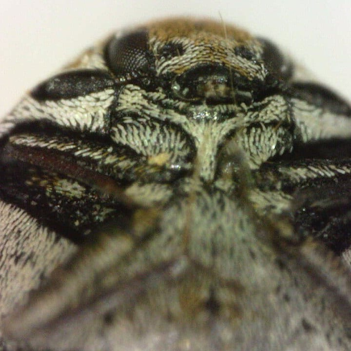
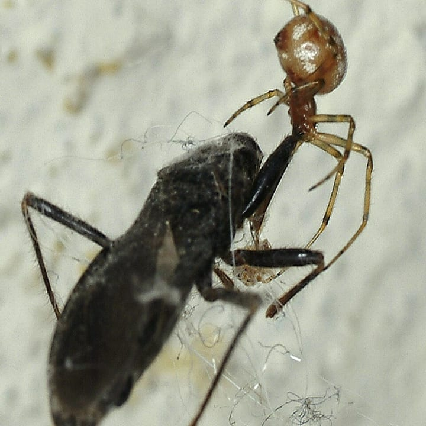
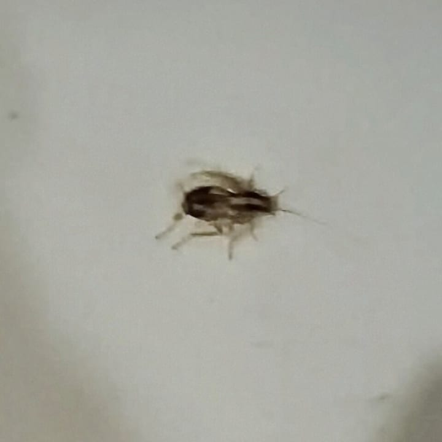
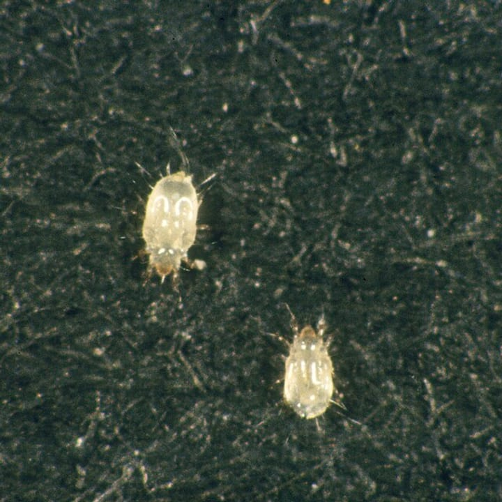
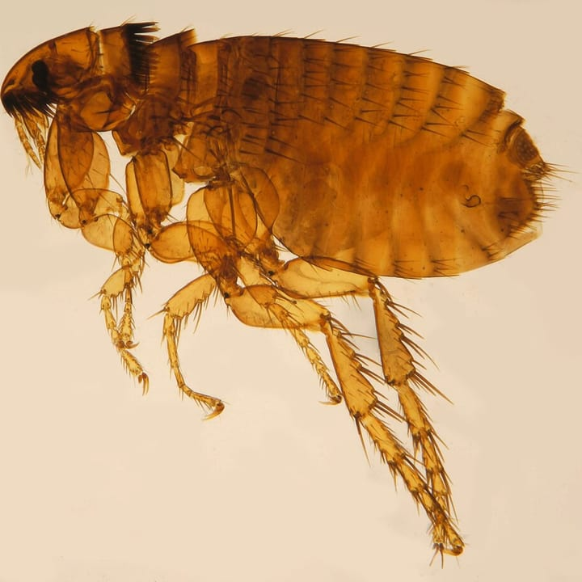
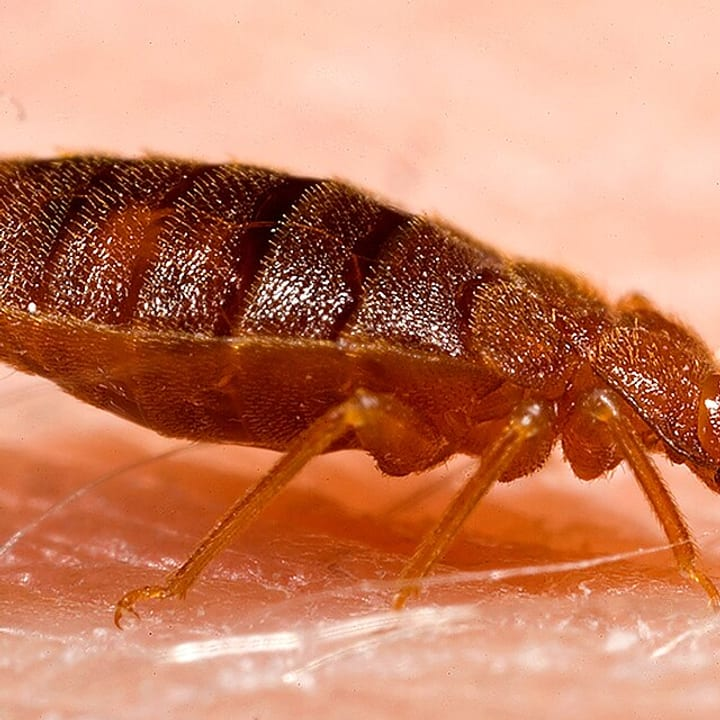
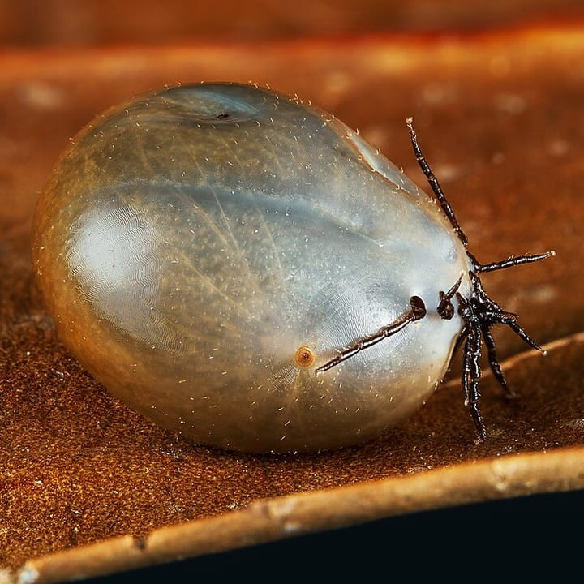

Quel nuisible avez-vous chez vous ?
Répondez à une à trois questions simples : l’outil vous donne l’espèce la plus probable, les bons réflexes, et si nous la traitons. Gratuit, sans inscription, et sans aucune donnée envoyée.
Disponible hors connexion sur ce téléphone après une première visite. Ajoutez la page à l’écran d’accueil.
Toutes les fiches, de A à Z
Les fiches ci-dessous sont dépliables. En mode Professionnel, chacune porte en plus sa fiche technique.
-
Abeille charpentière (xylocope)
Xylocopa spp. (le plus souvent Xylocopa violacea)Reconnaître
- Grosse abeille noire à reflets bleus
- Bourdonne fort
- Trou rond d’environ 1 cm dans un bois mort ou exposé
Trou de sortie : rond, environ 1 cm 1 cm — échelle indicativeDégâts
Galerie de ponte dans un bois mort ou exposé.
Gravité : limitée
Bons réflexes
- Espèce pollinisatrice : ne pas détruire.
Espèce utile : ne pas détruire
Fiche technique
Identification seulement, ne pas détruire.
Un doute sur l’identification ? Parlez-en à un technicien
-
Abeille domestique
Apis melliferaReconnaître
- Brun doré, poilu
- En grappe sur une branche quand l’essaim se déplace
Bons réflexes
- Ne détruisez pas l’essaim : appelez un apiculteur, qui le récupérera.
Espèce utile : ne pas détruire
Fiche technique
Identification seulement, ne pas détruire ; essaim d’abeilles → apiculteur.
Un doute sur l’identification ? Parlez-en à un technicien
-
Anthrène des tapis
Anthrenus verbasci
Photo : Donald Hobern, CC BY 2.0 Reconnaître
- Adulte rond de 2 à 3,5 mm, à écailles marbrées blanc, brun et jaune
- Larve velue de 4 à 5 mm, surnommée « ours laineux »
- Présence de mues vides près des dégâts
Dégâts sur textiles sans papillon visible ? Pensez à l’anthrène : sa larve velue est souvent confondue avec celle des mites.
Risques
Les larves rongent laine, soie, fourrures, plumes, cuir et collections naturalisées ; les adultes, eux, ne font aucun dégât. Les soies des larves peuvent irriter la peau des personnes sensibles.
Bons réflexes
- Aspirer à fond plinthes, dessous de meubles, bords de tapis et de moquettes, puis jeter le sac.
- Laver à 60 °C ce qui le supporte, ou congeler les textiles fragiles au moins 72 h.
- Vérifier les combles — nids d’oiseaux ou de guêpes, insectes morts —, sources fréquentes de réinfestation.
Appelez-nousSelon les cas, nous pouvons intervenir.
Fiche technique
Cycle d’environ un an ; larves actives toute l’année à l’intérieur ; adultes au printemps, attirés par la lumière et le pollen. Inspecter plinthes, dessous de tapis, placards, penderies, combles, nids d’oiseaux et cadavres d’insectes. Méthodes : suppression des sources, aspiration poussée, traitement par le froid ou la chaleur des objets infestés, insecticide de contact localisé sur plinthes et fissures, pièges de suivi.
Parlons-en : selon les cas, nous pouvons intervenir
-
Araignée
Araneae (ordre)
Photo : Joseph Berger, University of Georgia, Bugwood.org, CC BY 3.0 US Reconnaître
- Huit pattes, deux parties au corps
- La plupart des espèces sont inoffensives et utiles
Bons réflexes
- Elle régule les insectes de la maison : mieux vaut la laisser, ou la sortir dans un verre.
Espèce utile : ne pas détruire
Fiche technique
Identification seulement, ne pas détruire.
Un doute sur l’identification ? Parlez-en à un technicien
-
Autres fourmis
Formicidae (famille)Reconnaître
- En colonnes, sur une piste régulière
- Nid souvent à l’extérieur, sous une dalle ou un pot
Nous traitons ce nuisibleNous intervenons en Corse sous 24 à 48 h.
Fiche technique
Suivre les pistes jusqu’aux nids, souvent extérieurs. Gel appât de préférence, traitement périmétral en complément. Printemps et été.
-
Blatte américaine
Periplaneta americanaReconnaître
- 3 à 4 cm, rousse
- La plus grande des trois
- Réseaux et gaines techniques
Nous traitons ce nuisibleNous intervenons en Corse sous 24 à 48 h.
Fiche technique
Réseaux, caves, siphons, gaines techniques. Traiter les réseaux et les points d’entrée.
-
Blatte germanique
Blattella germanica
Photo : Salwa Farwaneh Dameh, CC0 Reconnaître
- 1 à 1,5 cm, brun clair
- Deux bandes sombres sur le thorax
- Cuisines, moteurs d’appareils, joints
Nous traitons ce nuisibleNous intervenons en Corse sous 24 à 48 h.
Fiche technique
Cuisines, moteurs d’appareils, joints, chaleur et humidité ; cycle rapide. Gel appât en nombreux petits points, régulateur de croissance, suivi par pièges à glu, alternance des matières actives (résistances connues aux gels).
-
Blatte orientale
Blatta orientalisReconnaître
- 2 à 3 cm, noire
- Brun luisant, plate, rapide, fuit la lumière
- Caves, réseaux, siphons
Nous traitons ce nuisibleNous intervenons en Corse sous 24 à 48 h.
Fiche technique
Réseaux, caves, siphons, gaines techniques. Traiter les réseaux et les points d’entrée.
-
Capricorne des maisons
Hylotrupes bajulusReconnaître
- Trous ovales de 6 à 10 mm
- Vermoulure en petits boudins tassés
- Grignotement audible en été
Trou de sortie : ovale, 6 à 10 mm 1 cm — échelle indicativeDégâts
La larve vit 3 à 10 ans dans l’aubier des résineux et le ronge sous une surface intacte ; pièces de charpente vidées de l’intérieur.
Gravité : structurel
Nous traitons ce nuisibleNous intervenons en Corse sous 24 à 48 h.
Fiche technique
Émergence en été ; inspecter l’aubier des résineux et les pièces en appui, sondage au poinçon. Curatif : bûchage des parties vermoulues, injection sous pression, traitement de surface. Préventif : pulvérisation sur charpente saine. Si la résistance mécanique est atteinte, remplacement ou renfort par un charpentier.
-
Chenille processionnaire du pin
Thaumetopoea pityocampaReconnaître
- Chenilles en file indienne
- Nids de soie blanche au bout des branches de pin
- Plaques qui démangent après une promenade sous les pins
Risques
Les poils sont très urticants, même sans contact direct avec la chenille.
Bons réflexes
- Ne touchez ni les chenilles ni les nids, et éloignez les enfants et les animaux.
Appelez-nousSelon les cas, nous pouvons intervenir.
Fiche technique
Nids d’hiver sur les pins. Retrait des nids en hiver, écopièges sur les troncs en fin d’hiver, traitement biologique à l’automne sur les jeunes chenilles, nichoirs à mésanges. Poils très urticants : EPI complet.
Parlons-en : selon les cas, nous pouvons intervenir
-
Fourmi ailée
Formicidae (famille)Reconnaître
- Ailes inégales
- Antennes coudées
- Taille fine, corps étranglé
Nous traitons ce nuisibleNous intervenons en Corse sous 24 à 48 h.
Fiche technique
Même démarche que pour les fourmis : suivre les pistes jusqu’aux nids, souvent extérieurs. Gel appât de préférence, traitement périmétral en complément.
-
Fourmi charpentière
Camponotus sp.Reconnaître
- Sciure fibreuse rejetée à l’extérieur
- Galeries propres et lisses
- Grosses fourmis noires
Dégâts
Creuse des nids dans un bois déjà humide ou abîmé ; signale souvent un problème d’humidité.
Gravité : modérée
Nous traitons ce nuisibleNous intervenons en Corse sous 24 à 48 h.
Fiche technique
Localiser et traiter le nid, faire corriger l’humidité du bois.
-
Fourmi d’Argentine
Linepithema humileReconnaître
- Petites, brun clair
- Colonnes immenses
- Très répandue sur la côte
Bons réflexes
- Ne pulvérisez pas d’insecticide sur les pistes : cela fragmente la colonie.
Nous traitons ce nuisibleNous intervenons en Corse sous 24 à 48 h.
Fiche technique
Suivre les pistes jusqu’aux nids, souvent extérieurs. Gel appât de préférence : la pulvérisation fragmente les colonies de fourmi d’Argentine. Traitement périmétral en complément. Printemps et été.
-
Frelon asiatique
Vespa velutinaReconnaître
- Corps noir velouté, bande orange
- Pattes jaunes
- Nid en boule de papier, souvent haut dans un arbre
Bons réflexes
- Ne vous approchez pas du nid et ne tentez rien vous-même.
- Photographiez l’insecte à distance, puis signalez-le.
Nous traitons ce nuisibleNous intervenons en Corse en urgence sous 24 h.
Fiche technique
Nid primaire au printemps dans un abri bas, nid secondaire en été, souvent haut dans les arbres ; activité d’avril à novembre, pic d’août à octobre. Intervention au crépuscule ou tôt le matin, colonie rentrée. Injection insecticide dans le nid par perche télescopique, retrait du nid si accessible. EPI anti-frelon complet. Espèce exotique envahissante : signaler les nids.
Besoin d’une intervention ?
En Corse en urgence sous 24 h.
-
Frelon européen
Vespa crabroReconnaître
- Gros, 2,5 à 3,5 cm
- Brun-roux et jaune, tête jaune
- Vole aussi de nuit, attiré par la lumière
Nous traitons ce nuisibleNous intervenons en Corse en urgence sous 24 h.
Fiche technique
Nids en cavité, toiture, cabanon ou sol ; le frelon européen vole aussi de nuit, attiré par la lumière. Poudrage ou injection à l’entrée du nid en cavité.
Besoin d’une intervention ?
En Corse en urgence sous 24 h.
-
Frelon oriental
Vespa orientalisReconnaître
- Brun-roux, bande jaune vif sur l’abdomen
- Pattes non jaunes
- Nid dans une cavité : mur, toiture, sol
Bons réflexes
- Ne bouchez pas l’entrée du nid : la colonie cherchera une autre sortie.
Nous traitons ce nuisibleNous intervenons en Corse en urgence sous 24 h.
Fiche technique
Nids dans les cavités (murs, toitures, sol), très présent en milieu urbain et portuaire ; défensif près du nid. Mêmes méthodes que pour le frelon asiatique. Signalement à la plateforme de suivi.
Besoin d’une intervention ?
En Corse en urgence sous 24 h.
-
Grosse vrillette
Xestobium rufovillosumReconnaître
- Trous ronds de 3 à 4 mm
- « Tic-tac » au printemps
- Vieux chêne humide, souvent déjà attaqué par des champignons
Trou de sortie : rond, 3 à 4 mm 1 cm — échelle indicativeDégâts
Cœur des poutres anciennes ruiné.
Gravité : structurel
Nous traitons ce nuisibleNous intervenons en Corse sous 24 à 48 h.
Fiche technique
Bois humide souvent attaqué par des champignons. Traiter d’abord la cause d’humidité, puis injection.
-
Guêpe
Vespula spp., Polistes spp.Reconnaître
- Jaune vif et noir
- Taille fine, 1 à 2 cm
- Nid en carton sous un toit, dans un cabanon ou un volet
Nous traitons ce nuisibleNous intervenons en Corse en urgence sous 24 h.
Fiche technique
Nids en cavité, toiture, cabanon ou sol. Poudrage ou injection à l’entrée du nid en cavité.
Besoin d’une intervention ?
En Corse en urgence sous 24 h.
-
Hespérophane
Trichoferus holosericeusReconnaître
- Trous ovales
- Feuillus secs : châtaignier, chêne
Trou de sortie : ovale, 6 à 10 mm 1 cm — échelle indicativeDégâts
Galeries dans l’aubier des feuillus, charpentes et meubles anciens.
Gravité : structurel sur les pièces fortement attaquées
Nous traitons ce nuisibleNous intervenons en Corse sous 24 à 48 h.
Fiche technique
Même démarche que pour le capricorne, sur les feuillus (châtaignier, chêne).
-
Loir
Glis glisReconnaître
- Bruits la nuit dans les combles
- Queue touffue grise
- Plus gros qu’une souris
Appelez-nousSelon les cas, nous pouvons intervenir.
Fiche technique
Vérifier le statut réglementaire de l’espèce avant toute intervention ; privilégier l’exclusion (obturation) après le départ des animaux.
Parlons-en : selon les cas, nous pouvons intervenir
-
Lyctus
Lyctus brunneusReconnaître
- Trous ronds de 1 à 1,5 mm
- Poudre très fine, type talc
Trou de sortie : rond, 1 à 1,5 mm 1 cm — échelle indicativeDégâts
Aubier des feuillus riches en amidon (chêne, frêne, bois exotiques) réduit en poussière ; parquets et meubles récents, souvent dans les premières années.
Gravité : superficiel à important
Nous traitons ce nuisibleNous intervenons en Corse sous 24 à 48 h.
Fiche technique
Aubier des feuillus, bois récents. Traitement de surface, injection selon l’épaisseur.
-
Malmignatte
Latrodectus tredecimguttatusReconnaître
- Noire, avec 13 taches rouges
- Milieux secs et broussailleux
Bons réflexes
- Ne la manipulez pas.
Appelez-nousSelon les cas, nous pouvons intervenir.
Parlons-en : selon les cas, nous pouvons intervenir
-
Mérule
Serpula lacrymans (champignon)Reconnaître
- Bois cassé en cubes
- Filaments blancs, coussinets cotonneux
- Poussière rousse de spores, odeur de cave
Dégâts
Détruit le bois et traverse la maçonnerie ; se développe avec l’humidité et le manque d’aération.
Gravité : structurel
Bons réflexes
- Faites appel à un spécialiste du traitement de la mérule.
- La déclaration en mairie est obligatoire.
Nous ne traitons pas ce nuisible
Fiche technique
Information seulement. Hors prestations Dezinsect Corse. Ne jamais traiter en surface seulement ; la source d’humidité doit être supprimée par un spécialiste. Déclaration en mairie obligatoire.
Un doute sur l’identification ? Parlez-en à un technicien
-
Mites
Plodia interpunctella (alimentaires ; Tineola bisselliella pour celles des vêtements)Reconnaître
- Petit papillon dans les placards ou les penderies
- Petites chenilles et fils de soie dans les paquets ou les textiles
Dégâts sur textiles sans papillon visible ? Pensez à l’anthrène : sa larve velue est souvent confondue avec celle des mites.
Appelez-nousSelon les cas, nous pouvons intervenir.
Parlons-en : selon les cas, nous pouvons intervenir
-
Mouche domestique
Musca domesticaReconnaître
- Corps trapu, vol rapide
- En nombre près des déchets ou de matières organiques
Nous traitons ce nuisibleNous intervenons en Corse sous 24 à 48 h.
Fiche technique
Rechercher la source (déchets, matières organiques). Hygiène, pièges lumineux à glu en zone alimentaire, appâts et larvicide sur les sources.
-
Moustique commun
Culex pipiensReconnaître
- Petit, fin, pattes longues
- Brun
- Pique la nuit, avec un bourdonnement
Nous traitons ce nuisibleNous intervenons en Corse sous 24 à 48 h.
Fiche technique
Gîtes plus grands que ceux du moustique tigre (bassins, fosses, vides sanitaires inondés). Même logique : suppression des gîtes, larvicide biologique, adulticide ponctuel.
-
Moustique tigre
Aedes albopictusReconnaître
- Petit, fin, pattes longues
- Noir rayé de blanc
- Pique le jour
Risques
Espèce vectrice de la dengue, du chikungunya et du zika.
Bons réflexes
- Videz chaque semaine tout ce qui retient l’eau : soucoupes, gouttières, regards, pneus.
Nous traitons ce nuisibleNous intervenons en Corse sous 24 à 48 h.
Fiche technique
Gîtes larvaires dans de petits volumes d’eau (soucoupes, gouttières, regards, pneus). Priorité à la suppression des gîtes, larvicide biologique sur les gîtes impossibles à supprimer, adulticide ponctuel sur la végétation.
-
Petite vrillette
Anobium punctatumReconnaître
- Trous ronds de 1 à 2 mm
- Petites boulettes granuleuses
Trou de sortie : rond, 1 à 2 mm 1 cm — échelle indicativeDégâts
Meubles, parquets, escaliers, boiseries ; réseau de galeries qui fragilise le bois année après année.
Gravité : superficiel à structurel selon l’ancienneté
Nous traitons ce nuisibleNous intervenons en Corse sous 24 à 48 h.
Fiche technique
Émergence de mai à juillet, favorisée par l’humidité. Traitement de surface, injection des pièces épaisses.
-
Poisson d’argent
Lepisma saccharinaReconnaître
- Argenté, fuselé
- Salle de bain, pièces humides
- Se déplace en ondulant
Appelez-nousSelon les cas, nous pouvons intervenir.
Parlons-en : selon les cas, nous pouvons intervenir
-
Psoque
Psocoptera (ordre)
Photo : CSIRO, CC BY 3.0 Reconnaître
- Minuscule, 1 a 2 mm, et pale
- Sur les livres, les papiers, les murs humides
- Se deplace par petites courses, sans sauter
Bons réflexes
- Reduisez l’humidite et aerez : le psoque se nourrit des moisissures microscopiques qu’elle entretient.
Appelez-nousSelon les cas, nous pouvons intervenir.
Fiche technique
Indicateur d’humidite plus que ravageur. Traiter la cause — ventilation, source d’humidite — avant d’envisager quoi que ce soit d’autre.
Parlons-en : selon les cas, nous pouvons intervenir
-
Puce
Ctenocephalides felis (puce du chat, la plus fréquente chez les chiens et les chats)
Photo : Katja ZSM, CC BY-SA 3.0 Reconnaître
- Minuscule, elle saute
- Un chien ou un chat à la maison
- Piqûres sur les chevilles et les mollets
Bons réflexes
- Faites traiter l’animal chez le vétérinaire : c’est là que se joue l’essentiel.
- Lavez les couchages et aspirez soigneusement les sols et les plinthes.
Nous ne traitons pas ce nuisible
Fiche technique
Identification seulement. Hors prestations Dezinsect Corse.
Un doute sur l’identification ? Parlez-en à un technicien
-
Punaise de lit
Cimex lectularius
Photo : CDC / Harvard University — Gary Alpert, Harold Harlan, Richard Pollack, Domaine public Reconnaître
- 4 à 7 mm, plate, brun-rouge
- Dans le lit et ses coutures
- Petites taches noires sur le matelas
Risques
Piqûres souvent alignées par deux ou trois, constatées au réveil.
Bons réflexes
- Ne jetez pas le matelas et ne déplacez rien dans une autre pièce : cela disperse l’infestation.
- Lavez le linge à 60 °C et passez-le au sèche-linge.
Souvent confondu avec
-
-
-

-
-
-
Nous ne traitons pas ce nuisible
Fiche technique
Identification seulement. Hors prestations Dezinsect Corse.
Un doute sur l’identification ? Parlez-en à un technicien
-
Rat brun (surmulot)
Rattus norvegicusReconnaître
- Crottes d’environ 2 cm, à bout arrondi
- Sous-sol, caves, égouts
- Terriers : fouisseur
Nous traitons ce nuisibleNous intervenons en Corse sous 24 à 48 h.
Fiche technique
Fouisseur ; terriers, berges, égouts, sous-sols. Postes au sol le long des murs et aux bouches de terriers. Lutte intégrée : appâts uniquement en postes sécurisés et fixés, pièges mécaniques, relevés réguliers, ramassage des cadavres, protection des espèces non cibles, plan des postes remis au client.
-
Rat noir
Rattus rattusReconnaître
- Crottes de 1 à 2 cm, en fuseau pointu
- Combles et greniers
- Traces en hauteur : grimpeur
Nous traitons ce nuisibleNous intervenons en Corse sous 24 à 48 h.
Fiche technique
Grimpeur ; combles, faux plafonds, gaines, accès par toitures et arbres. Postes en hauteur. Lutte intégrée : appâts uniquement en postes sécurisés et fixés, pièges mécaniques, relevés réguliers, ramassage des cadavres, protection des espèces non cibles, plan des postes remis au client.
-
Scolopendre
Scolopendra cingulataReconnaître
- Corps plat et segmenté
- 5 à 15 cm
- Sous les pierres, dans les murs de pierre sèche
Risques
Sa morsure est douloureuse.
Bons réflexes
- Ne la manipulez pas à main nue.
Appelez-nousSelon les cas, nous pouvons intervenir.
Parlons-en : selon les cas, nous pouvons intervenir
-
Scutigère
Scutigera coleoptrataReconnaître
- Longues pattes fines
- Très rapide
- Pièces humides
Bons réflexes
- Elle chasse d’autres insectes : mieux vaut la laisser, ou la sortir dans un verre.
Espèce utile : ne pas détruire
Fiche technique
Identification seulement, ne pas détruire.
Un doute sur l’identification ? Parlez-en à un technicien
-
Sirex
Urocerus gigasReconnaître
- Trous parfaitement ronds de 4 à 7 mm
- Gros insecte à longue tarière
- Sort d’un bois posé depuis 1 à 3 ans
Trou de sortie : rond, 4 à 7 mm 1 cm — échelle indicativeDégâts
L’insecte provenait de l’arbre avant la coupe et ne réinfeste pas le bois sec ; il peut percer enduits et revêtements en sortant.
Gravité : généralement sans gravité
Appelez-nousSelon les cas, nous pouvons intervenir.
Fiche technique
Pas de traitement curatif en général (ne réinfeste pas le bois sec). Rassurer le client, reboucher les trous.
Parlons-en : selon les cas, nous pouvons intervenir
-
Souris
Mus musculusReconnaître
- Crottes de 3 à 6 mm, en grain de riz
- Grignotements à de nombreux endroits
- Petit territoire, de quelques mètres
Bons réflexes
- Bouchez les passages : un trou de 6 mm lui suffit.
Nous traitons ce nuisibleNous intervenons en Corse sous 24 à 48 h.
Fiche technique
Petit territoire de quelques mètres, grignote à de nombreux endroits ; postes rapprochés, obturation des passages (un trou de 6 mm suffit). Lutte intégrée : appâts uniquement en postes sécurisés et fixés, pièges mécaniques, relevés réguliers, ramassage des cadavres, protection des espèces non cibles, plan des postes remis au client.
-
Termite ailé
Reticulitermes sp.Reconnaître
- 4 ailes identiques
- Antennes droites
- Corps sans étranglement
Risques
Un essaimage signale une colonie déjà installée à proximité.
Bons réflexes
- Conservez quelques individus ou une aile : ils permettent de confirmer l’espèce.
Nous traitons ce nuisibleNous intervenons en Corse sous 24 à 48 h.
Fiche technique
Même démarche que pour les termites souterrains : inspection des pieds de murs, plinthes, huisseries et zones humides, sondage au poinçon, recherche de cordonnets.
-
Termite de bois sec
Kalotermes flavicollisReconnaître
- Petits granulés durs à 6 faces éjectés
- Petites colonies
Dégâts
Surtout bois morts, souches, arbres et ceps ; rarement dans le bâti.
Gravité : limitée
Appelez-nousSelon les cas, nous pouvons intervenir.
Fiche technique
Surtout hors bâti ; retrait et destruction du bois infesté.
Parlons-en : selon les cas, nous pouvons intervenir
-
Termite ouvrier
Reticulitermes sp.Reconnaître
- Petit, blanc-crème, mou
- Dans le bois ou dans des galeries de terre
- Fuit la lumière dès qu’on ouvre une galerie
Bons réflexes
- Ne refermez pas la galerie ouverte : laissez-la en l’état pour le diagnostic.
Nous traitons ce nuisibleNous intervenons en Corse sous 24 à 48 h.
Fiche technique
Même démarche que pour les termites souterrains : stations d’appâtage intérieures et extérieures, barrière chimique par injection sol et murs.
-
Termites souterrains
Reticulitermes sp.Reconnaître
- Aucun trou de sortie
- Bois feuilleté dans le sens des fibres, galeries garnies de terre
- Cordonnets sur les murs, peinture qui cloque, essaimage au printemps
Dégâts
Dévorent l’intérieur de toutes les essences, plinthes, huisseries, charpentes, papiers et cartons ; attaque invisible jusqu’à la rupture.
Gravité : structurel
Bons réflexes
- La déclaration en mairie est obligatoire pour l’occupant.
Nous traitons ce nuisibleNous intervenons en Corse sous 24 à 48 h.
Fiche technique
Inspecter pieds de murs, plinthes, huisseries, zones humides ; sondage au poinçon, recherche de cordonnets. Stations d’appâtage intérieures et extérieures, barrière chimique par injection sol et murs, barrière préventive avant construction. Déclaration en mairie obligatoire par l’occupant ; état parasitaire exigé à la vente dans les zones délimitées par arrêté.
-
Tique
Ixodes ricinusPhoto : MicrocosmicWorld, CC BY-SA 4.0 Reconnaître
- Huit pattes, et non six : ce n’est pas un insecte
- Se fixe dans la peau et y reste accrochee
- Vient de l’exterieur : herbes hautes, broussailles, animaux
Bons réflexes
- Retirez-la avec un tire-tique, sans l’ecraser ni l’endormir.
- Surveillez l’apparition d’une plaque rouge autour du point de piqure, et consultez un medecin si elle s’etend.
Nous ne traitons pas ce nuisible
Fiche technique
Identification seulement. Hors prestations Dezinsect Corse : une tique arrive de l’exterieur, elle ne forme pas de population dans le logement.
Un doute sur l’identification ? Parlez-en à un technicien
| Insecte | Visuel | Forme et taille des trous | Vermoulure | Bois attaqués | Gravité |
|---|---|---|---|---|---|
| Capricorne des maisons | ovales, 6 à 10 mm | petits boudins tassés | résineux | structurel | |
| Hespérophane | ovales | vermoulure de feuillus | feuillus secs | structurel sur les pièces fortement attaquées | |
| Petite vrillette | ronds, 1 à 2 mm | petites boulettes granuleuses | meubles, parquets, boiseries | superficiel à structurel selon l’ancienneté | |
| Grosse vrillette | ronds, 3 à 4 mm | granuleuse, « tic-tac » au printemps | vieux chêne humide | structurel | |
| Lyctus | ronds, 1 à 1,5 mm | poudre très fine, type talc | aubier des feuillus, bois récents | superficiel à important | |
| Sirex | parfaitement ronds, 4 à 7 mm | aucune | bois posé depuis 1 à 3 ans | généralement sans gravité | |
| Termites souterrains | — | aucun | aucune, galeries garnies de terre | toutes essences | structurel |
| Termite de bois sec | — | aucun, granulés éjectés | granulés durs à 6 faces | bois morts, souches, ceps | limitée |
| Fourmi charpentière | — | aucun, galeries propres | sciure fibreuse rejetée | bois humide ou abîmé | modérée |
| Mérule | — | aucun | poussière rousse de spores | bois humide, traverse la maçonnerie | structurel |
Les confusions les plus fréquentes
-
Termite ailé ou fourmi ailée ?
Le termite ailé a quatre ailes identiques, des antennes droites et un corps sans étranglement. La fourmi ailée a des ailes inégales, des antennes coudées et une taille marquée. Une aile tombée sur un rebord de fenêtre suffit à trancher.
-
Comment distinguer une crotte de rat d’une crotte de souris ?
La souris laisse des crottes de 3 à 6 millimètres, en grain de riz. Le rat noir en laisse de 1 à 2 centimètres, en fuseau pointu, plutôt en hauteur dans les combles. Le surmulot en laisse d’environ 2 centimètres à bout arrondi, plutôt en sous-sol.
-
Frelon asiatique ou frelon européen ?
Le frelon asiatique a le corps noir velouté, une bande orange et surtout les pattes jaunes. Le frelon européen est plus gros, de 2,5 à 3,5 centimètres, brun-roux et jaune, avec la tête jaune, et il vole aussi de nuit.
-
Comment savoir si un insecte du bois est encore actif ?
La vermoulure est claire et fraîche sous les trous, de nouveaux trous apparaissent avec des bords nets, et l’on entend un grignotement en été pour le capricorne ou un « tic-tac » au printemps pour la grosse vrillette.
-
L’outil est-il utilisable par les professionnels ?
Oui. Le mode Professionnel ajoute une recherche par nom commun ou scientifique sur toutes les fiches, et une fiche technique par espèce : biologie, période d’activité, méthodes et points de vigilance.
Identification indicative, à confirmer sur place par un technicien certifié Certibiocide. Piqûre avec gonflement du visage ou gêne respiratoire : appelez le 15.
Scannez pour ouvrir l’outil sur votre téléphone
Pratique sur un chantier : la page reste utilisable hors connexion après une première visite.
Contactez Dezinsect Corse
Remplissez ce formulaire pour une intervention rapide ou un devis gratuit.